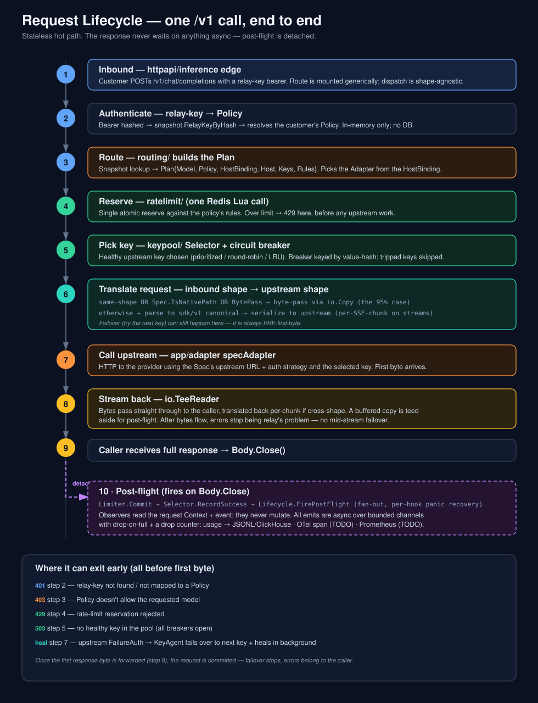

One /v1 call, end to end. The data plane is stateless and the response never waits on anything async — every check that can fail happens before the first byte, and post-flight work is detached.

docs/request-lifecycle.svg · companion to architecture.htmlThe customer POSTs to /v1/chat/completions (or any registered shape) with a relay-key bearer token. Routes are mounted generically via MountRegistry; the handler is shape-agnostic — there is no per-vendor branching at the edge.
The bearer is hashed and looked up against snapshot.RelayKeyByHash, resolving the customer's Policy. This is an in-memory snapshot read — no Postgres on the request path.
routing/ does a snapshot lookup and assembles a Plan{Model, Policy, HostBinding, Host, Keys, Rules}. The wire-shape Adapter is read off the HostBinding, not the Host — so a single host can serve multiple wire shapes.
A single atomic reservation runs against the policy's resolved rules — the goal is one Redis round-trip per request. If the caller is over limit, it's rejected here, before any upstream work happens.
A healthy upstream key is selected from the pool (prioritized / round-robin / least-recently-used). Each key has a per-key circuit breaker keyed by value-hash, so a rotated key automatically gets a fresh breaker and tripped keys are skipped.
If the inbound and upstream wire shapes match, or the spec's IsNativePath fires, or the shape is BytePass (Embeddings), the body is forwarded verbatim via io.Copy — the 95% case. Otherwise it's parsed into the sdk/v1 canonical and re-serialized to the upstream shape.
The generic app/adapter specAdapter makes the HTTP call using the Spec's upstream URL + auth strategy and the selected key. On an upstream FailureAuth, the KeyAgent decides: fail over to the next key now and heal the bad one in the background, or single-flight a re-resolve and retry the same key.
Response bytes pass straight through to the caller (translated back per-SSE-chunk if the route is cross-shape). A buffered copy is teed aside for post-flight. After bytes start flowing there is no mid-stream failover — errors past this point belong to the caller.
When the customer finishes reading and calls Body.Close(), the detached post-flight goroutine is triggered. The HTTP response itself is already complete and was never blocked.
Runs Limiter.Commit → Selector.RecordSuccess → Lifecycle.FirePostFlight. Observers (registered PostFlightHooks, each in its own sub-goroutine with panic recovery) read the request Context + event; they never mutate. All emits are async over bounded channels with drop-on-full and a drop counter.
| Status | Step | Cause |
|---|---|---|
401 | 2 · auth | relay-key not found, or not mapped to a Policy |
403 | 3 · route | Policy doesn't allow the requested model |
429 | 4 · reserve | rate-limit reservation rejected |
503 | 5 · pick key | no healthy key in the pool (all breakers open) |
| retry / heal | 7 · upstream | upstream FailureAuth → KeyAgent fails over + heals in background |